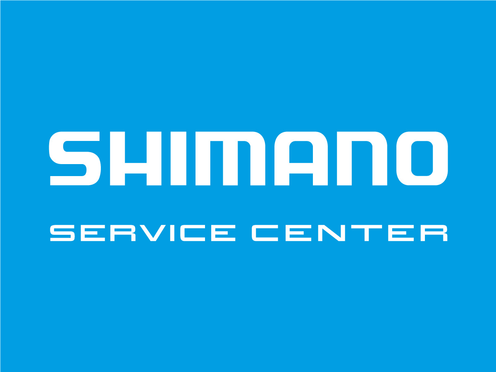
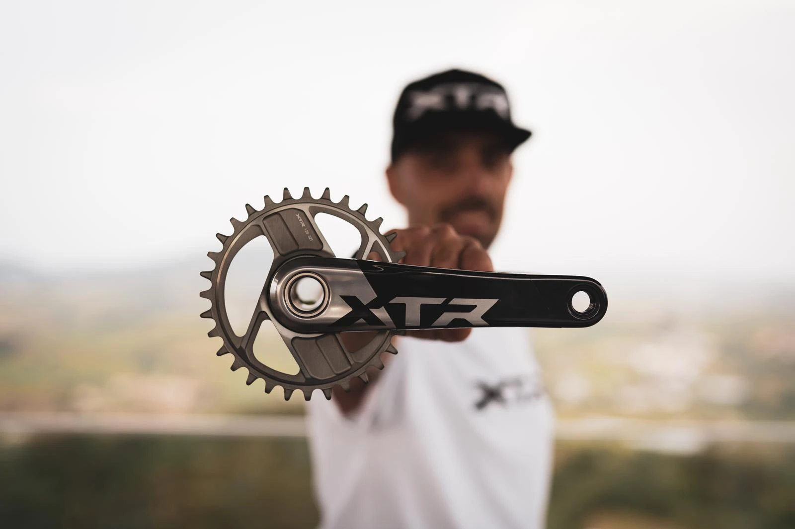
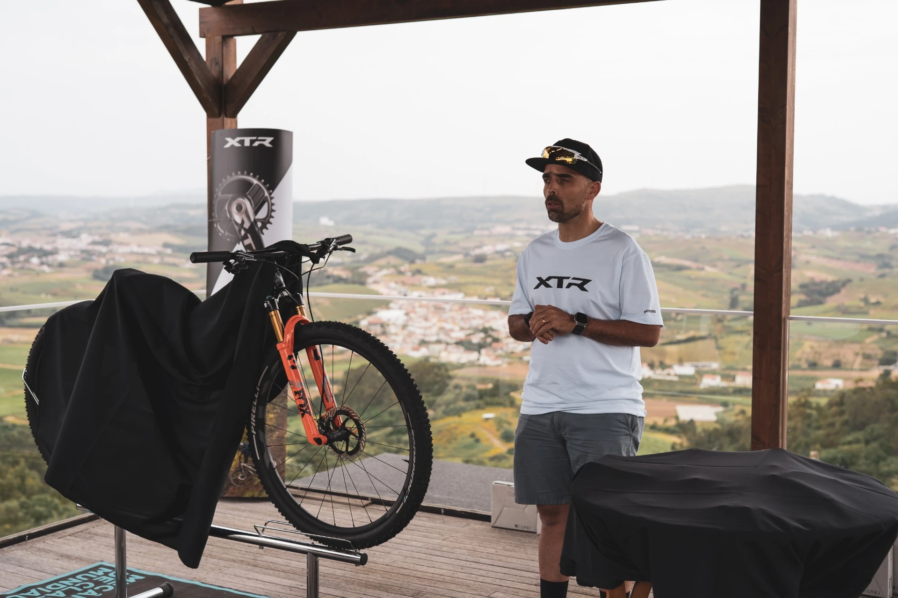
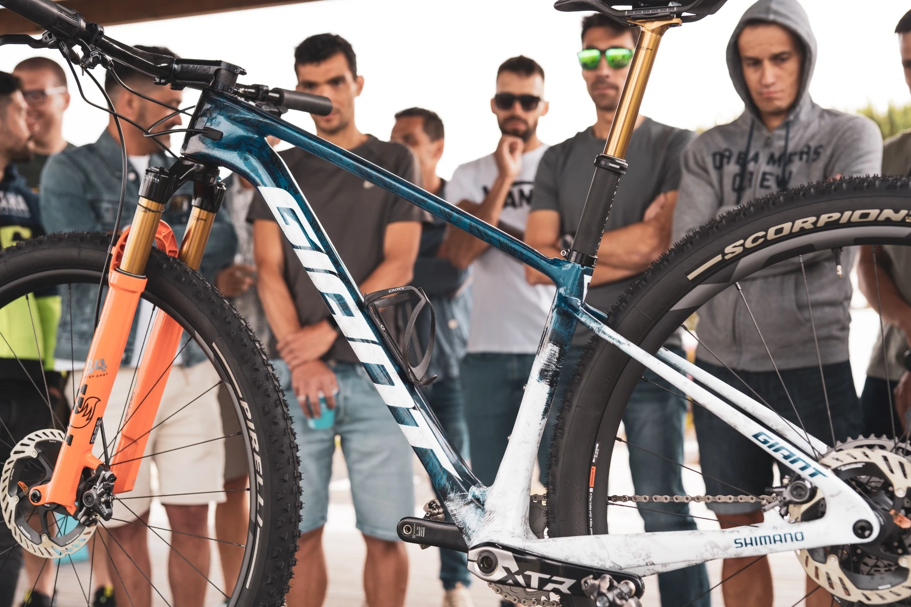
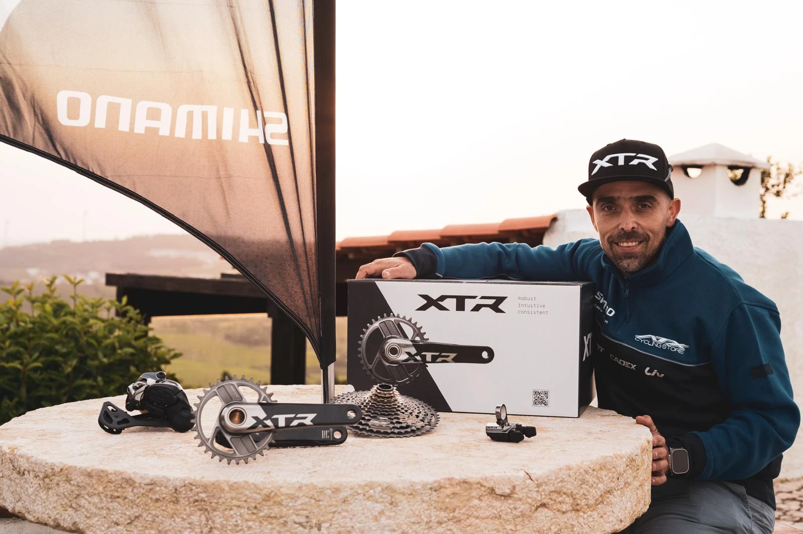
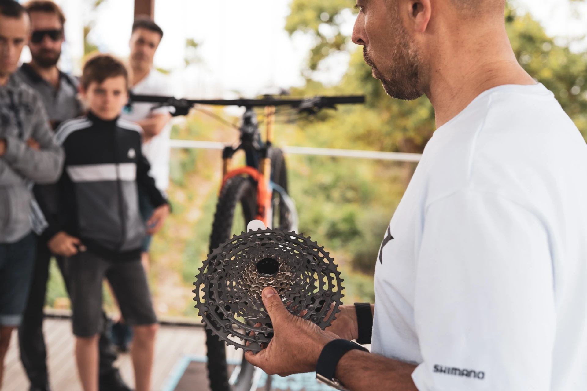
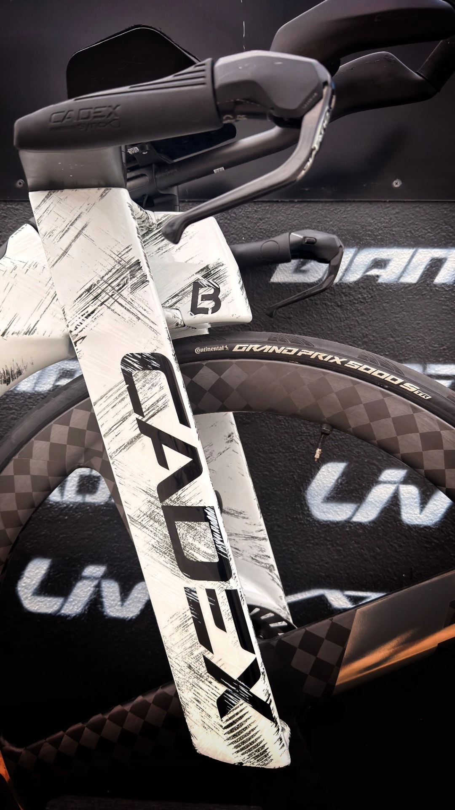
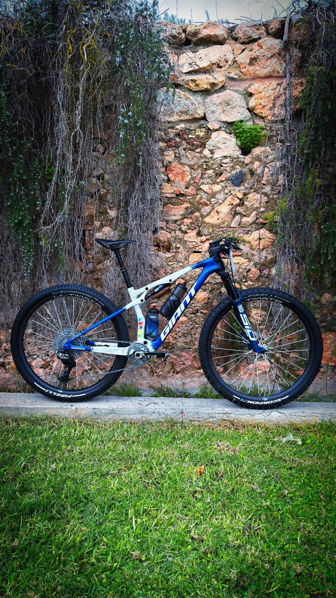
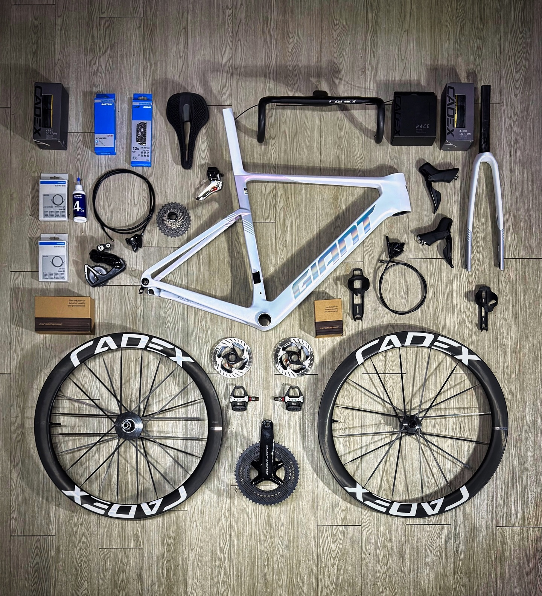
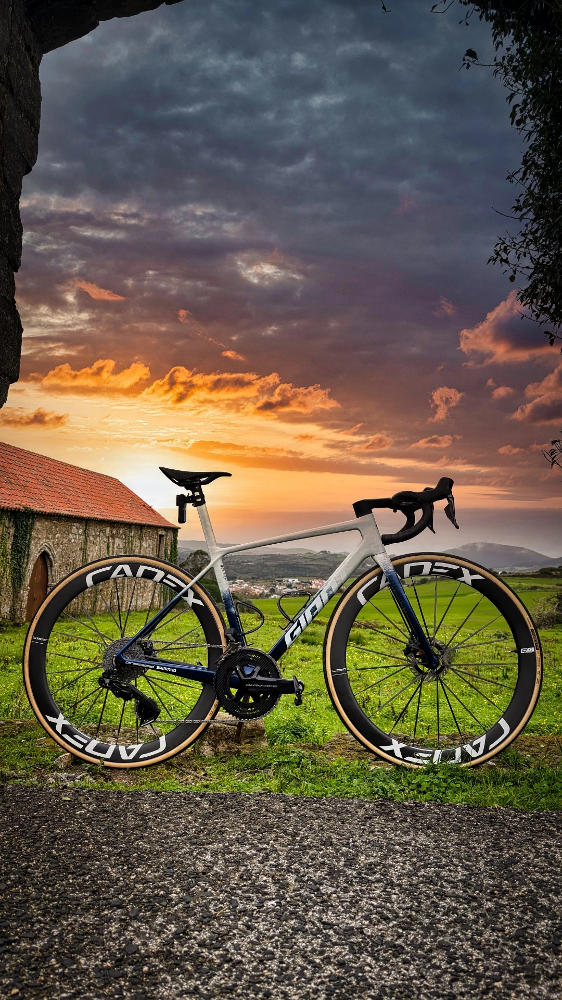

Sendo Shimano Service Center pertencemos a uma rede global de revendedores independentes de bicicletas certificados pela Shimano. Combinando assim uma manutenção de excelência com as mais recentes tecnologias para proporcionar o melhor serviço possível na sua bicicleta.

A ATX Cycling Store marcou presença no lançamento mundial da nova geração Shimano XTR. Um evento dedicado à inovação, performance e ao futuro do mountain bike.









Terça – Sexta
09:00 – 13:00 | 15:00 – 19:00
Sábado
09:00 – 13:00